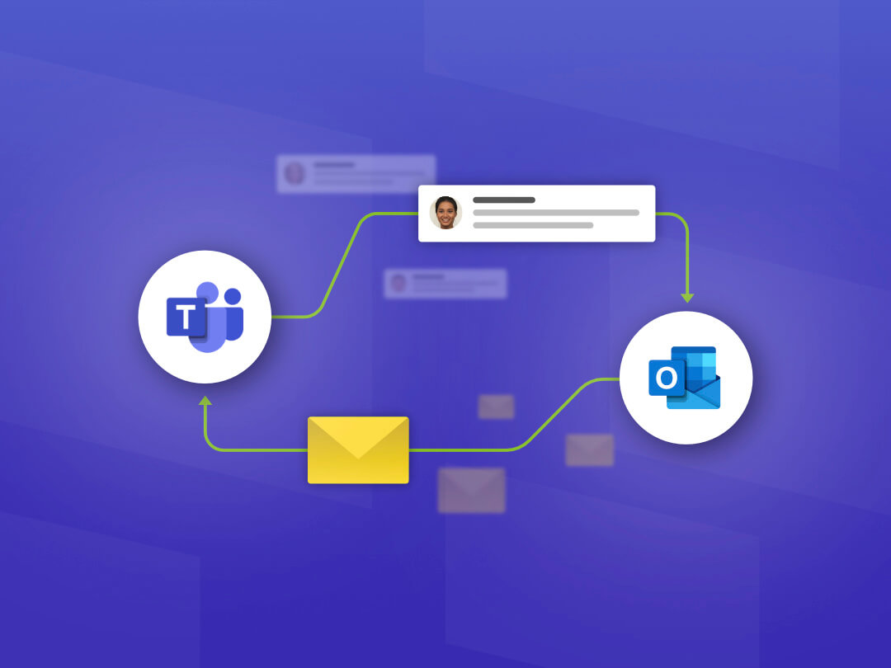

About project
Working on a project for a client involves collaborating with a client to identify their needs and deliver a product or service that meets those needs. This can include developing a website, creating a branding strategy, designing a product, or providing a range of other services.
Welcome to Fenia's magical world of Greek handmade toys for adults! Immerse yourself in Fenia's meticulously crafted collection, where each toy tells a unique story. Connect with museums and discover the rich artistic heritage of Greek craftsmanship. Engage in our interactive game and unlock up to 5% discounts on your purchases. Join us on this journey as we celebrate the artistry of Fenia's creations, bringing joy and imagination to your world. Welcome to Fenia's Handmade Toys!
Our Team
Final report
Introduction: In this final report, Olivia and I present a detailed account of our collaborative efforts. Our primary goal was to provide a comprehensive overview of the project, highlighting various key aspects. We began by introducing the client. To ensure efficiency, we divided the workload between us and actively sought feedback to enhance our work.
A critical aspect of our project was identifying the target audience, which we achieved through research, interviews, and survey. This information helped us create user stories that shaped our design process. By conducting surveys, we gathered valuable data that informed the creation of persona.
The project also involved designing a prototype, which we thoroughly tested with users. Their feedback and insights proved invaluable in refining our product. Finally, we concluded the report by summarizing our findings and drawing meaningful conclusions from the project as a whole.
This report serves as a comprehensive documentation of our project journey, highlighting the various steps we took to achieve our objectives.

Card sorting
The card sorting activity was implemented to gain valuable user insights regarding website layout preferences. By involving users from the target group, we allowed them to categorize and prioritize website elements, ensuring that the layout aligns with their expectations and enhances user experience. Leveraging the convenience of the online card sorting tool, Optimal Sort, enabled efficient participation and expanded our pool of user feedback, ultimately informing our design decisions and optimizing the overall user experience.
Client communication
One vital aspect of our project was effective communication with our client, Fenia. Recognizing the initial challenges we faced in this area, I took on the responsibility of improving communication promptly. This involved organizing online meetings as needed, ensuring that we established a smooth and consistent line of communication with our client. By prioritizing this aspect, we were able to address any issues and foster a stronger collaborative relationship, leading to more efficient project progress.
- 
Main question and Sub questions
Provides clarity: Having a well-defined main question and sub-questions ensures that the team has a clear understanding of what they are trying to achieve in the project.
Division of labor: The main question and sub-questions allow the team to divide the work among themselves, ensuring that everyone has a specific task to complete, and progress can be monitored efficiently.
Comprehensive research: The sub-questions can help the team to focus on specific areas of research, ensuring that a comprehensive analysis is carried out. This ensures that the team does not miss out on any essential details.
Improved efficiency: By breaking down the main question into sub-questions, the team can work more efficiently, as each member can focus on their particular task, leading to a more productive and efficient project.
Better outcomes: Working on a main question and sub-questions ensures that the team has a structured approach to the project, leading to better outcomes. This also ensures that the final product is of high quality and meets the project's objectives.

Interview transcript
Interviews are vital to gain insight into the perspectives, experiences, and needs of individuals relevant to a project. They provide an opportunity to gather rich and relevant information that can inform decision-making and problem-solving. We were not taking into account interviews that were not helpful for the project. This helps ensure that the interview answers remain valuable in achieving the project's objectives.
Planning
Planning in a project is crucial as it helps to define objectives, identify tasks, allocate resources, establish timelines, and set milestones. This ensures that the project runs smoothly, stays on track, and achieves its goals within the given constraints of time, budget, and resources. Good planning also helps to anticipate and manage risks, as well as to communicate progress and expectations to stakeholders, fostering transparency and accountability.

Questions for client
Preparing questions for clients is important because it helps to clarify the goals and objectives of the project, as well as the specific needs and preferences of the client. By asking targeted questions, you can gather the information necessary to design and develop a product or service that meets the client's requirements and expectations. Additionally, asking questions can help to establish clear communication and expectations between the client and the team, which can prevent misunderstandings and ensure a smooth project workflow.
Presentation
Presenting our project in front of the class is a great way to receive feedback, practice your public speaking skills, hold yourself accountable, and collaborate with others. It can help you create a better final product and develop important skills that will serve you well in the future.
Client meeting
During a client meeting, it's important to actively listen to the client, understand their needs and concerns, and communicate clearly and effectively. It's also important to be prepared, professional, and respectful. The meeting should be focused on gathering information, clarifying expectations, and building a relationship with the client. Additionally, taking notes and following up with the client after the meeting can help ensure that everyone is on the same page and that the project is successful.
Interviews
Interviews are vital to gain insight into the perspectives, experiences, and needs of individuals relevant to a project. They provide an opportunity to gather rich and relevant information that can inform decision-making and problem-solving. We were not taking into account interviews that were not helpful for the project. This helps ensure that the interview answers remain valuable in achieving the project's objectives. How ever this is just one of ours interviews that was successful
User stories
Based on the user stories I created for the project I primarily used user research methods such as internet research and survey that we did with the group. These methods allowed me to gather insights and understand user needs related to temperature regulation in homes with a thermostat in the main floor/ room. The user stories I created can be seen as a way to synthesize and make sense of the research findings, which is a common practice in the design thinking process. By creating user stories, I’m able to distill the research findings into specific user needs and requirements such as behind the scenes of a toy and Ancient Greek toys in general. The research lead me to more questions or new areas of exploration, however that’s normal.
Prototypes
We sketched and transformed design concepts into a paper prototype, involving users from our target audience to gather feedback and assess the user experience. This allowed us to identify areas for improvement. We maintained communication with the client, updating them on progress and incorporating their input. Based on the insights gained, we developed a high-fidelity prototype using Figma to refine the design further.